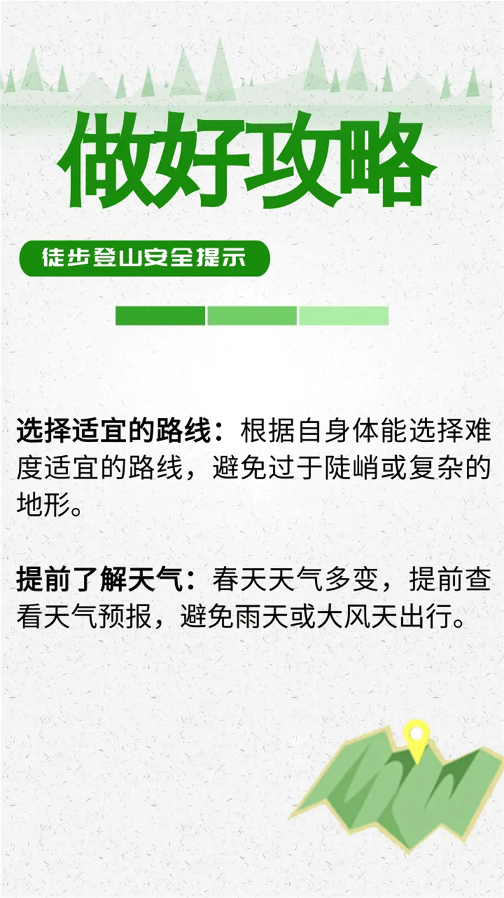
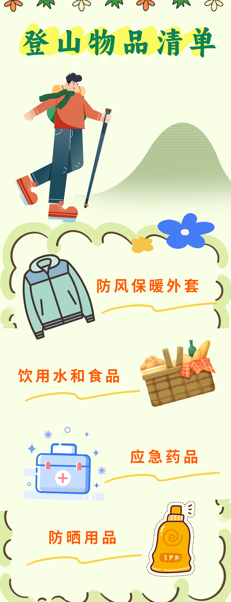
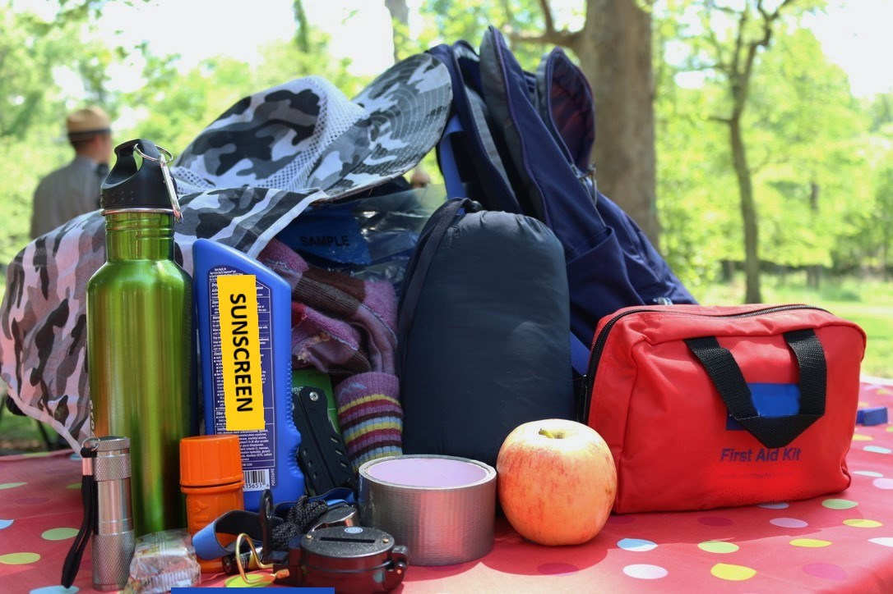

本页先保留15份有明确视觉形态的材料，用来分析安全内容如何被组织、分层和呈现。
Topic brief for tutor review
低海拔山地徒步安全教育视觉材料的内容分析与传播策略研究
为什么会有这个选题是因为我最近在做考中级户外山地指导员和急救证的准备，就发现不管是小红书、抖音、微信搜一搜这样的社交平台或者是官方渠道的安全教育和安全提示之类的材料不在特定状况下搜索不到，但是像是低海拔户外徒步也就是常说的出去爬个山，这样的安全教育并没有一个系统的展现，更不用说相关的视觉材料。在搜集过文献和相关官方的视觉材料后得出这个初步的选题。收集到的视觉材料先按“是否有可分析的视觉形式”做筛选，剔除纯网页文字、抓图失败、重复项和没有经过视觉设计的材料，本页保留15份样本。初步想法是：看安全信息在海报、图卡、长图、网页和清单里是怎样被组织出来的，先分析材料本身是否信息完善，不去证明受众安全意识有没有因此提升。
查看15份样本 看导师确认问题


15份样本
公开来源
先看内容与表达
01 / 研究边界
为什么是这个选题
本次选题先把研究对象限定在“低海拔山地徒步安全教育视觉材料”。我暂时不把重点放在安全教育体系、受众意识测量或传播效果验证上，而是先分析这些公开视觉材料本身。
具体来说，我想看三件事：材料呈现了哪些安全内容，风险信息被组织到什么层级，视觉表达是否能帮助普通公众完成识别、判断和行动。
这个方向会牵涉课程、管理机制和组织责任，目前材料支撑不够。
没有问卷、访谈或实验数据，不能直接证明传播效果。
02 / 文献依据
文献是怎么把题目推到这里的
这些文献不是用来堆数量的。它们先说明山地户外活动有哪些风险，再说明安全教育不能只停留在提醒，最后把问题推到“风险知识怎样被视觉材料转译给普通公众”。
风险识别、风险管理和指标体系文献说明：山地活动风险不能只写成“注意安全”，而要拆成天气、路线、装备、身体、团队和应急处置。
户外安全教育文献说明：参与者可能知道安全重要，但不一定知道如何判断、下撤、求助或处理突发情况。
社区安全文化研究提示：安全教育不是单次宣传，而是在社区、学校、活动组织和公共平台里持续传播。
安全标识、色彩、绘本和信息有效性研究提示：视觉表达会影响识别、理解和行动，因此值得单独分析。
秦士昊、林章林：山地徒步者亲环境行为
大致内容：把山地徒步看作情境刺激，分析其如何引发自我反思和行为转变。
对选题帮助：提示视觉材料中的场景图像、路线节点和行动提示，也可能成为触发安全反思的刺激。
景超、张恩利：秦岭山地徒步风险识别
大致内容：将山地徒步风险分为体能、技能、心理、自然环境、组织管理和器材设备等方面。
对选题帮助：直接支持我把材料中的安全内容拆成具体风险场景，而不是停留在抽象提醒。
邱海枝、李正贤：山地户外运动风险防范指标体系
大致内容：强调山地户外风险防范需要系统、全面、动态的指标支持。
对选题帮助：说明视觉材料背后应有风险分类逻辑，不能只靠零散经验和口号。
朱道祖：大学生户外运动安全认知与应急能力
大致内容：发现安全意识、安全知识、安全态度和安全行为之间并不均衡，风险识别和团队协作是短板。
对选题帮助：支撑我关注“知道之后能不能判断和行动”，而不是只看材料有没有安全知识。
罗发海：云南省户外运动安全风险评估指标体系
大致内容：构建外部客观风险、内部可控风险和混合类风险体系，并强调信息风险。
对选题帮助：“信息风险”对视觉材料分析很关键：表达不清、提示不足本身也可能放大风险。
薛安妮：儿童户外安全教育绘本设计
大致内容：研究如何把户外安全知识放进故事、角色、构图、色彩和情景地图中。
对选题帮助：提供“安全知识需要视觉化、情境化、生活化”的设计学依据。
邱承柏等：大学生出行安全教学模式
大致内容：讨论体验式学习、案例分析、影像观摩等方式对安全规避和应急技能的作用。
对选题帮助：提示视觉材料不能只是静态提醒，也可以承担“微型情境教学”的功能。
罗先斌等：学校户外教育的生命安全教育价值
大致内容：强调真实环境、实践体验和安全文化氛围对生命安全教育的重要性。
对选题帮助：说明山地安全教育需要具体场景，视觉材料可以帮助把场景提前呈现出来。
赵承磊：我国户外运动产业发展现状与对策
大致内容：说明户外运动大众化、泛户外消费兴起，同时安全教育和风险防御体系仍需加强。
对选题帮助：提供选题背景：户外参与增多之后，面向普通人的安全传播需求更突出。
陈佳丽：深圳市高校户外运动急救发展
大致内容：关注户外急救素养、AED、课程培训和自救互救能力。
对选题帮助：提示视觉材料不应只写预防，也应包含求救、定位、失温、扭伤等应急处置信息。
李高：高校大学生户外运动风险管理
大致内容：指出高校户外运动风险管理薄弱、形式单一、安全意识不足等问题。
对选题帮助：作为背景文献，说明安全教育不能只靠制度，也需要更具体的传播材料支撑。
方华英等：学生社区安全教育功能与路径
大致内容：讨论学生社区中的安全责任协同、线上线下教学、安全文化营造和评估机制。
对选题帮助：提示“社区”不是简单地点，而是安全信息被组织、接触和转发的场域。
李治欣等：社区安全文化建设
大致内容：从经济、社会、教育、科技、管理等因素分析社区安全文化建设。
对选题帮助：支撑我把户外安全视觉材料放在社区安全教育和安全文化建设中讨论。
张放、李明炅：色彩视错觉在标识设计中的运用
大致内容：讨论色彩对识别性、视觉印象、心理距离和注意力的影响。
对选题帮助：支持我分析安全材料中的警示色、风险等级色和正确路径色是否承担信息功能。
杨汉等：青少年户外教育安全影响因素指标体系
大致内容：从教育者、受教育者、教育环境、教育影响和社会保障构建安全影响因素体系。
对选题帮助：提示安全教育涉及多主体，但我的网页需要把复杂因素转成普通公众能读懂的视觉信息。
梁海燕、朱璇：背包旅游安全研究述评
大致内容：指出国内旅游安全研究存在方法偏文献化、概念混用、应用性不足等问题。
对选题帮助：提醒我不能泛泛谈“户外安全”，而要把对象收窄到低海拔山地徒步和具体材料。
张奕莹等：基于信息熵的安全标识信息有效性评价模型
大致内容：提出安全标识有效性受版面设计、个体认知、外界环境和安全氛围共同影响。
对选题帮助：这是我分析视觉材料是否有效组织信息的重要依据。
宋恒义、马腾：高山探险目的地形象、风险感知与行为意向
大致内容：研究目的地形象如何通过风险感知和情绪影响行为意向。
对选题帮助：说明视觉表达不只是传递事实，也会影响公众对风险的感受和判断。
李海：户外体育旅游风险管理体系构建
大致内容：强调风险管理包括识别、分析、评价、处理、沟通和反馈。
对选题帮助：支撑“识别—判断—行动”的分析链条，避免只做图像风格评价。
许蓉蓉、杨倩：户外运动风险管理研究述评
大致内容：梳理户外运动风险内涵、风险识别、评估和应对研究。
对选题帮助：说明风险管理已有研究基础，我的切入点应放在风险知识如何被视觉转译。
温一帆：户外运动风险识别与应对策略
大致内容：通过典型事故案例梳理环境、装备、团队、组织规则和行动方案风险。
对选题帮助：为我建立风险内容分类提供核心依据，也能对应材料里的天气、装备、同行和路线提示。
徐欣然：旅游过程中的风险识别与安全管理
大致内容：强调旅游安全管理应贯穿出行前、过程中和结束后，尤其需要提前识别风险。
对选题帮助：支持我把视觉材料按“出行前、行进中、突发时”来观察。
龚志恺等：户外运动“安全山野课堂”教学实验
大致内容：用风险清单、风险矩阵、阈值触发、撤离预案和复盘机制训练风险管理能力。
对选题帮助：直接提示视觉材料可以从“提醒”升级为“清单—等级—行动方案”的结构。
03 / 材料档案
14份可用于视觉分析的材料
原先收集到20份材料，但不是每一份都适合进入视觉分析。这里保留有明确视觉形态的14份，并标出主视觉类型，方便导师判断样本范围是否成立。
海报 / 图卡7份
长图 / 清单4份
网页 / 图文页面3份
剔除A11、A12、A13、A14、A15、A17
04 / 初步观察
从材料里先看到三个问题
这里不写成最终结论，只作为选题成立的理由：材料之间确实有差异，也有分析空间。
内容覆盖不均
天气、装备、路线出现频率高，身体状态、团队行为、下撤条件和求救定位往往不够具体。
行动步骤不稳定
不少材料能提醒“注意安全”，但没有说明什么情况下取消、下撤、报警或原地等待。
视觉组织差异大
图卡、长图、清单和网页材料混在一起时，信息层级、阅读顺序和重点提示方式差异明显。
05 / 分析框架
拟用三个维度分析材料
这个框架目前是初稿，作用是把“安全内容”和“信息如何传播”连起来，避免只做简单罗列。
06 / 需要导师确认
有五个问题
也是第一次正经写啦。
研究对象限定为“低海拔山地徒步安全教育视觉材料”会不会过窄或过宽？
初筛20份、保留15份进入视觉分析，这个样本范围是否成立？
以典型视觉材料内容分析作为主方法是否成立？如果补充访谈或问卷会不会太庞大？
“风险内容、知识层级、视觉表达”三维框架能否支撑论文主线？
最后一章应写成视觉传播策略，还是对材料本身问题的设计建议？